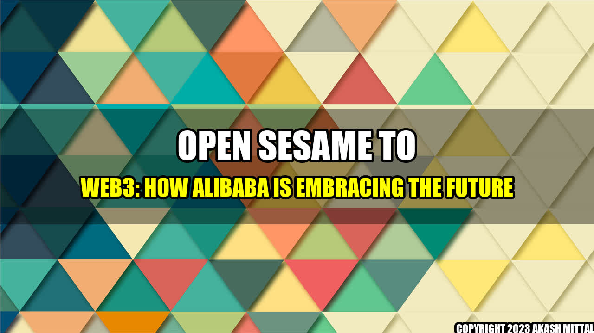

Open Sesame to Web3: How Alibaba is Embracing the Future
Imagine you are a farmer in rural China, looking to sell your crops to the highest bidder. In the past, you would have had to rely on middlemen to connect you with buyers, and negotiate prices that may not be fair. But today, thanks to Alibaba's blockchain-based solution, you can sell directly to customers on the company's e-commerce platform Tmall, and receive payment instantly.
Alibaba Group Holding Ltd, the Chinese multinational conglomerate specializing in e-commerce, retail, and technology, has recently announced its entry into the world of Web3 with the launch of its decentralized cloud computing platform, AliOS.
Real-Life Examples
AliOS, built on top of the permissioned blockchain Hyperledger Fabric, aims to provide businesses with a secure and flexible way to run their operations. Some of the real-life examples of AliOS in action include:
- Tyson Foods, the multinational food company, is using AliOS to track the entire supply chain from farm to table, ensuring quality and safety standards are met.
- Babytree, an online parenting community, is using AliOS to build a decentralized platform for sharing parenting knowledge and products.
Conclusion
With Web3 and blockchain technology gaining traction in the business world, Alibaba's foray into this space is a natural and strategic move. By leveraging the power of decentralization and smart contracts, Alibaba is poised to transform various industries and enable more transparent, efficient, and secure transactions.
However, as with any emerging technology, there are also risks and challenges to consider. For example, privacy and data protection remain a concern, as well as the potential for monopolistic practices and lack of regulatory oversight.
Nevertheless, Alibaba's commitment to innovation and its vast resources and expertise make it a major player to watch in the Web3 space.
- Blockchain-based solutions offer a new level of transparency and trust in various industries.
- Risks and challenges such as privacy and regulation need to be addressed.
- Alibaba is well positioned to lead the way in Web3 innovation, but must also be held accountable for its actions.
Akash Mittal Tech Article
Share on Twitter Share on LinkedIn